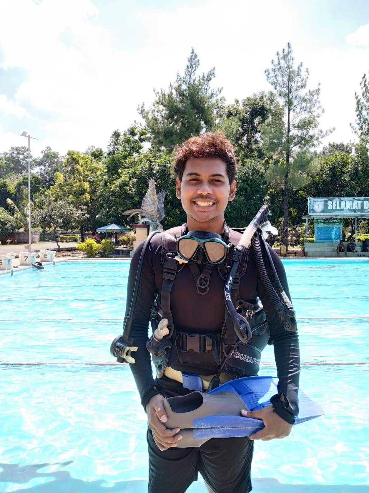

Hello everyone, my name is Ahmad Rayis who is a student of Marine Science at Diponegoro University who really loves
the world of spatial science, has served in associations, conducted research activities in the SeaCrest study group
(Seagrass Conservation and Research Center, and learned a lot about the offshore world at IMSO ( The Offshore Studies Student Association)
with a complicated background when asked where I came from, I will be confused about the answer, but with a life like me I get a lot of
experiences and stories.
Nama: Ahmad Rayis
Tanggal Lahir: 17 Oktober 1998
Tempat Lahir: Bekasi
Status: Single
Hobby: Basket, Futsal
Pendidikan: S1 Ilmu Kelautan
Motto Hidup: Hakunna matata